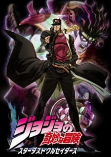

Death Note

Dragon Ball

Follow the adventures of Goku, a Saiyan warrior, as he trains in martial arts and defends Earth from powerful enemies while searching for the mystical Dragon Balls.
Detective Conan

Teen detective Shinichi Kudo is transformed into a child while investigating a mysterious organization. Using his new identity as Conan Edogawa, he continues solving cases to find a cure.
Devilman Crybaby

Akira Fudo merges with a demon to save humanity from evil. As a "Devilman," he battles other demons, facing the brutal reality of both human and demonic nature.
Gintama

In a futuristic Edo under alien rule, samurai Gintoki Sakata fights to keep his way of life while handling bizarre and often hilarious situations with his companions.
JoJo's Bizarre Adventure: Part 1 & 2

The adventures of Jonathan Joestar and Joseph Joestar, each battling supernatural forces and family enemies in a unique blend of action and style.
JoJo's Bizarre Adventure: Part 3 (Stardust Crusaders)
Jotaro Kujo and his allies embark on a journey to Egypt to defeat the sinister Dio Brando, utilizing mysterious powers known as Stands.
JoJo's Bizarre Adventure: Part 4 (Diamond is Unbreakable)
In a quiet town plagued by serial killings, Josuke Higashikata and his friends use their Stand powers to protect the peace and uncover dark secrets.
JoJo's Bizarre Adventure: Part 5 (Golden Wind)

Giorno Giovanna, son of Dio, aspires to become the head of the mafia to bring justice to his country. With the help of his Stand, he confronts powerful enemies in Italy.
One Piece

Monkey D. Luffy and his pirate crew sail across the seas in search of the legendary One Piece treasure. Their journey is filled with battles, friendships, and unbreakable dreams.